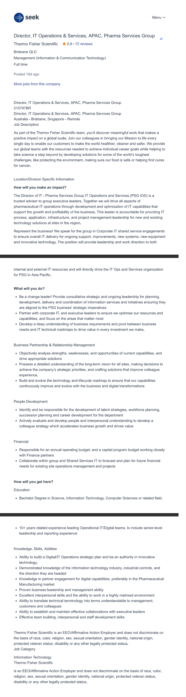
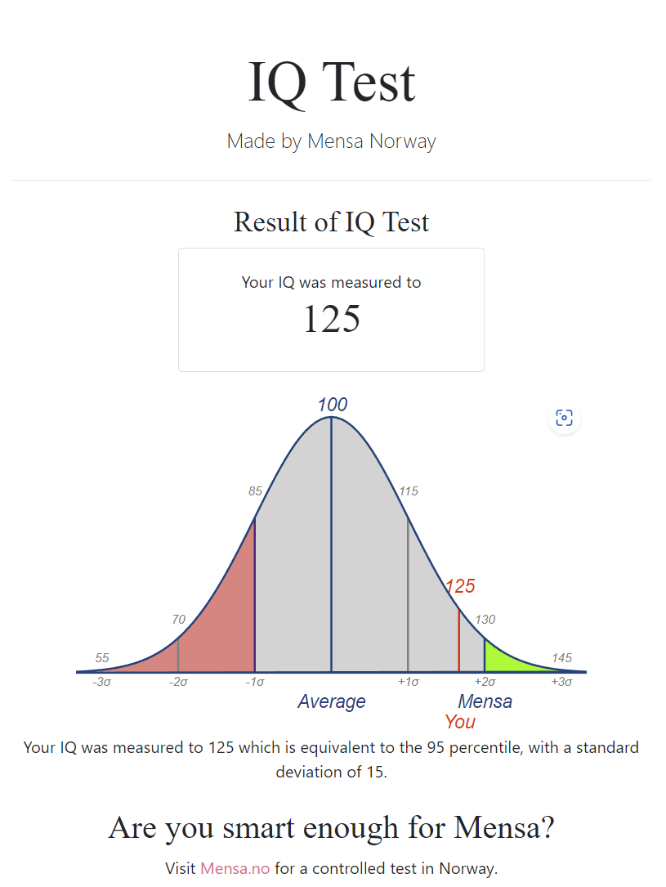

Technological advancements, science, knowledge and exploration:
Reading about the technological progress in personal computing.
Learning of scientific discoveries, especially relating to the universe.
The future of humanity, exploring the galaxy and the science required to enable this.
Hobbies:
Photography – Studio, Landscape and Family.
Fishing – From the land and sea
Pets:
Chino – My cappuccino coloured Beagelier (half Beagle, half cavalier).
Interesting facts:
I couldn't just give one interesting factoid so I hereby attach below, 2 videos and 1 link that say a lot about me:
I love science. And this video is my favourite scientific videos. It explains scientific facts in an eloquent way, combining science, with the real impact of the consequences of a journey through space.
This video amazes me in the scope and the possibilities, and ultimately shows the rammifications in the future that we cannot get away from.
Cool Worlds Youtube Channel is a great educational and entertaining resource. It focuses on space related scientific discoveries, exploration, and the physical principles that govern the universe. The host is Professor David Kipping of Columbia University.
This next video is so heart warming and devastatingly sad at the same time. It is so emotional that it makes me cry every single time I watch it.
Thankfully there are people like Pastor Lee in the world. However, with the knowledge that he is not long of this world. I am deeply saddened when thinking of who will accept, and take care of the babies after he has gone.
This link below, may be the funniest article I've ever read. Maybe it's the made up physics formula - SETI. And the way it's analysed with each poor soul. Whose only sin is to be filmed while falling. And thereby having it shared with the rest of the world in perpetuity.
In any case, let me lighten the mood with this next link
And if the above wasn't explicitly and literally an interesting fact about me - let me give you this interesting fact:
25 years ago or there abouts, I did an Introduction to Computing course in UNSW. The first assignment too, was creating a website. HTML3 was the standard. HTML4 was only released during the 1st semester of that year, in April 1998. If I recall, I received a distinction for that course. I'm hoping to do better this time.
My Interests
What is your interest in IT?
I am currently in a IT Project Management role, and thoroughly enjoy managing resources and applying myself both high level and low level - when the opportunity arises.
Deep inside my psyche, I would love to be a great programmer. To be able to create something cohesive, elegant, and have it seen as a benchmark to progresses humanity forward. Whether it be something small but helpful, or groundbreaking, such as general artificial intelligence.
I would like to be able to create a world in VR. Whether it be to assist in allowing those that cannot explore, to be able to explore a whole new world. Or for others, to provide breath taking adventures.
I would like to have the opportunity to create tools that can calculate the trajectory to the moon, or mars, or stars. To map the path to the nearest exo planet in Proxima Centauri.
Or create an artifical intelligence that allows a system to model and analyse chemical interactions to cure cancer.
What's imporant for me in the end, is to contribute something improve humanity in some way.
When did your interest in IT start?
When I was about growing up, about the age of 8, I was introduced into the world of IT with the Commodore 64 personal computer and a Nintendo entertainment system.
I used the Commodore 64 for games and I also learnt how to program the Commodore 64 using Basic. Later on, after transcribing an assembler/compiler from a magazine, I used hexadecimal to code simple games like a Zaxxon clone.
Of course, I used magazines to provide the source code.
It was this realisation, that showed that the computer could provide a method for humans to create programs to calculate a desired product.
Later on my family bought a Tandy 1000 - an IBM AT clone.The IBM clone was more business focused and had productive applications. (all be it very simple and unstable.)
It also had games for entertainment, but it further opened the possibilities and showed the direction that computers were headed:
More powerful, with each generation. More capable - with unlimited possibilities in the future.
Was there a particular event or person that sparked your interest? Outline your IT experience (if any).
So if there was any person, it would be my father who bought the Commodore 64 and other computers as I grew up. It opened up a world of opportunities to learn, and enjoy as a past time.
There were several events that sparked my interest in IT. Where it was discovering games, playing games with my siblings, or with friends. Discovering PC magazines and books that allowed me to learn some programming. And some magazines came with cassette tapes, then floppy disks which stored programs, games and applications.
What is surprising to me now, is that I didn’t think about a job in IT till probably in Year 11 in my Computer Studies course.
My teacher at that time mentioned that you could get well paid jobs in IT. He mentioned for example, that database administrators can earn $500 an hour. That was in 1994!
Of course, I am still looking for a job paying that well in IT. But that memory did get me interested in a career in IT.
I had this romantic (or naïve) idea about being a jet setting IT expert, wearing Armani and globe trotting as an expert IT in First Class.
Why did you choose to come to RMIT?
I searched several online course options, hosted with different universities. And the RMIT syllabus was the one that was most ideal for me. It had programming units but also Project Management. Which would aid in what I currently do, and aid in what I could possibly do in the future.
In addition, looking at the University worldwide rankings, RMIT was at a reasonable level for Australia. It is well respected. And having spent some time studying in RMIT Melbourne about 20 years ago, I had a good experience. This helped to solidify my choice of RMIT.
What do you expect to learn during your studies?
I expect to learn about information technology in a more up to date manner than when I completed by first Introduction to Computing course over 25 years ago.
I expect to learn from the ground up, and hope to clear any misconceptions I may have, after being in the sector for many years.
However, I will use my experience and knowledge to question the knowledge being given to me. So I can analyse for myself again, what is false and what is correct.
I expect to learn about programming and the frameworks within IT in general. Learning in a way that is correct, formalised - with the correct technique and methodologies.
Specifically of programming, I expect to learn about modern paradigms that weren't around a quarter of a century ago. Such as machine learning, big data, internet of things. Not to forget the low level programming techniques. Up date to date programming languages. Either the latest revision of C, Java, or Python and the latest frameworks. From the basics of formula, syntax, arrays, to the more advanced such as linking libraries, creating polymorphic code and other bleeding edge computational developments.
I will expect to learn about the project management aspects and how it applies to the information technology space, as well as leading teams, and other management level knowledge.
Preface:
My ideal job will have the ability to make key decisions that directly impact, and shape the course of a company.
Additionally the end product has to be beneficial to people, community, society and ideally humanity at large. Ideally, it will be at the director or executive level.
The company or product / output cannot damage or otherwise hurt the groups mentioned above directly, or as a result of a bi product of the above.
Ie. Defence/Arms industry. Main output / product is damaging to the environment or is poisonous to humans or animals, or plants.
However, if it is a Space and aeronautics venture to drive human exploration / colonisation, then the key directive is for the benefit of humanity and overrides other impacts to the environment.
Another ideal job would be as the founder of a startup or CEO of a large tech company similar to FAANG.
If I were to take a step back into reality, and not think I am Elon Musk or Sergey Brin for a minute, my ideal realistic job would be one that:
• Allows key decision making
• Shape the strategy
• Managing people
• Benefits from my knowledge, experience and skillset
• Company product is benefitting humanity
Here is one example of an ideal job for me:

A description (in your own words) of the position, and particularly what makes this position appealing to you.
The position is a Director of IT.
The high level function is to be responsible for the management of everything in the IT department. It will involve being one of the key drivers of strategy and decision making that impacts the corporation at a senior level. It may involve controlling or directing multiple streams of projects, the schedule, budget, and managing the head count available to the IT department.
It is appealing to me, as it would constitute a promotion (or three) from my current position as a Project Manager. In addition to the management of teams, it would also allow me to extend my responsibilities to decision making and helping shape the core strategic aims.
I like the sections that state I will be responsible for business and relationship management, people development and financial control of the IT budget.
The position has direct impact not only to the staff within the company. But the position would also have a direct impact the patients and their families. Whether it be in the products and services that the company provides.
The company, being a pharmaceutical company produces products that benefit many people directly. This for me would tick the requirement that what I am doing constitutes improving society and humanity in a meaningful way.
A description (in your own words) of the skills, qualifications and experience required for the position.
The requirements are described generically, but I would believe that it requires:
Multiple years driving successful large projects and programs.
Documented successes and verifiable inputs that led to the success
Fluent oral and written English language skills. In addition to the business nous required to form a position, and the communication and relationship management skills to get people onboard and working towards a common goal.
It is also to facilitate, inform and negotiate with both internal and external parties to gain approval, to mediate agreements, and largely drive the organisation to benefit by helping guide tasks to success.
Success in managing IT teams and inter-departmental negotiations.
A description (in your own words) of the skills, qualifications and experience you currently have.
I have fluent oral and written skills.
I am able to negotiate within teams and within complex matrix like orgnisations.
I am able to think within a strict logical framework and also have a creative and flexible mindset to achieve goals.
I have qualifications in Prince2 Foundation and Practitioner. I have a known project management methodology.
I have over 15 years experience in project management driving projects in multiple industries. As a Project Manager, Project Analyst and other roles within the PMO team.
A plan describing how you will obtain the skills, qualifications and experience required for the position,
building on those you have now. This need not be greatly detailed, (and will probably change significantly
over time anyway), but try to be as specific as you can.
I will be required to complete a Bachelors Degree in Information Technology.
While I am working full time, I will study part time. I estimate the duration to complete the course to be 5-6 years.
Following on from this, I will need an MBA to acquire the skillset for the management of people and teams.
While I am working full time, I will study part time. I estimate the duration to complete the course to be 4-5 years.
I will need to work in a successful environment to earn the 10+ years experience leading Operation/Digital teams.
As mentioned, the job requirement is 10 years experience however, it doesn't hurt to apply for the role before the 10 years. And instead, promote myself by stating that I had over a 15 years worth of experience in a Project Management role, which contributes to some relevant experience in managing a successful portfolio.
A free online test is available from the website. I completed 30/35 questions in the 25 minute time limit.
Which resulted in the IQ score of 125. I am devastated. I expected to get into Mensa.

What do the results of these tests mean for you?
I believe the results of these tests show results, that may be identified as ideal for an certain type of company, or the candidate themself.
For me, I would like to think that the employer, or oneself, would see it as only one indicator. Not the end all and be all, of that individual.
In saying that, one can learn and decide for ourself how accurate the categorisation or label is for us.
And either use it as an asset - a way to know oneself, and improve your own set of skills, with the strategies recommended.
Or if you believe it does not indicate your true nature, investigate yourself how your psychology operates and if unique, find a way to learn it and progress from there.
Knowing this, we can shape the habits we have to make best use of our styles. Whether it is learning, or social interactions, or to help decide what career we have that will best engage us.
Again, for me the tests shows that I am a logical, visual and intelligent person. I believe I need to be in a career that uses my logic and intelligence, and use my visual thinking style to the best extent I can.
How do you think these results may influence your behaviour in a team?
I would be more aware of my compulsions and control them better. And use my skillset and traits to its potential.
This way you can mitigate and minimise any detrimental behaviour and utilise the strengths I have.
How should you take this into account when forming a team
It would be ideal to form a team of individuals with different traits and skillsets, so each have their own areas of expertise and personality traits. Some may be more comfortable in leadership and social situations, such as being extroverted.
While others can be more introverted but highly skilled in analysis, and problem solving.
Forming a team with different strengths and capabilities allows each member to shine in different areas.